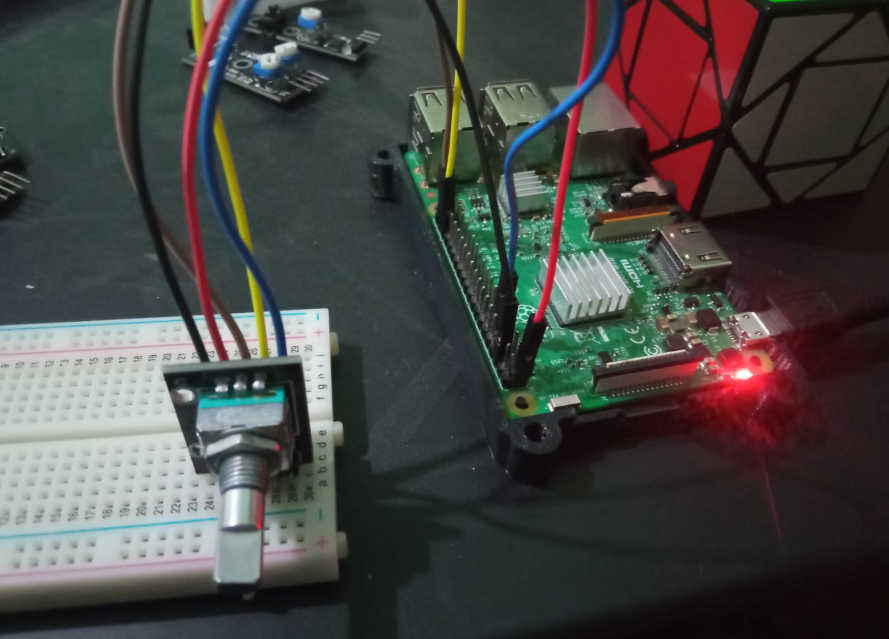

Este sensor se encarga de enviar señales de acuerdo al giro de este mismo, puede funcionar trabajando con 2 casos, falso y verdadero que seria como este ejemplo, aunque tambien podria trabajar con numeros
Realizado por Christopher Eduardo Barrientos Guerra